번
티티버거가 자체 개발한 브리오슈 번
촉촉하고 쫀득한 결을 내려고 번부터 직접 만들었습니다. 시판 번을 그대로 쓰면 나오지 않는 식감입니다.
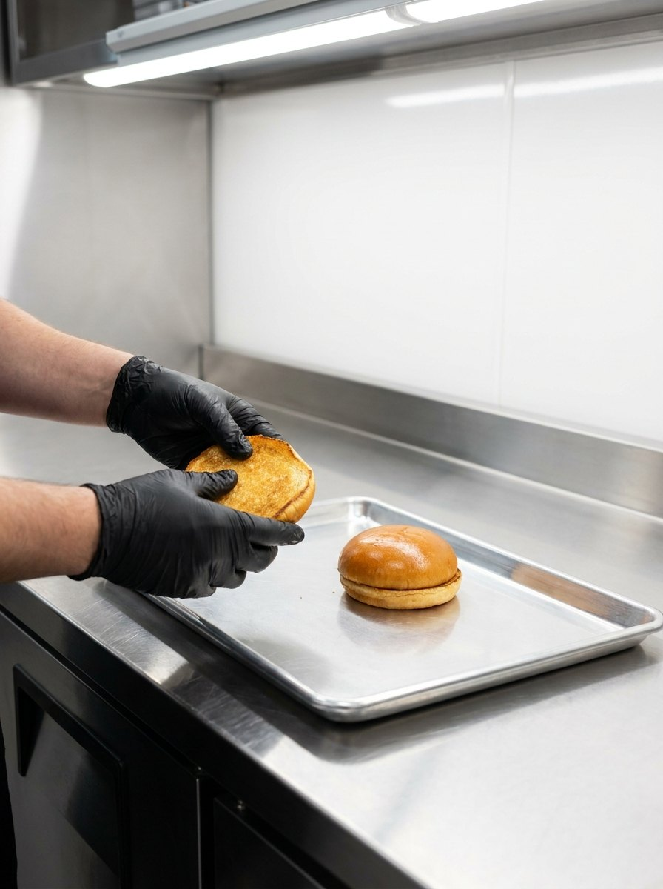
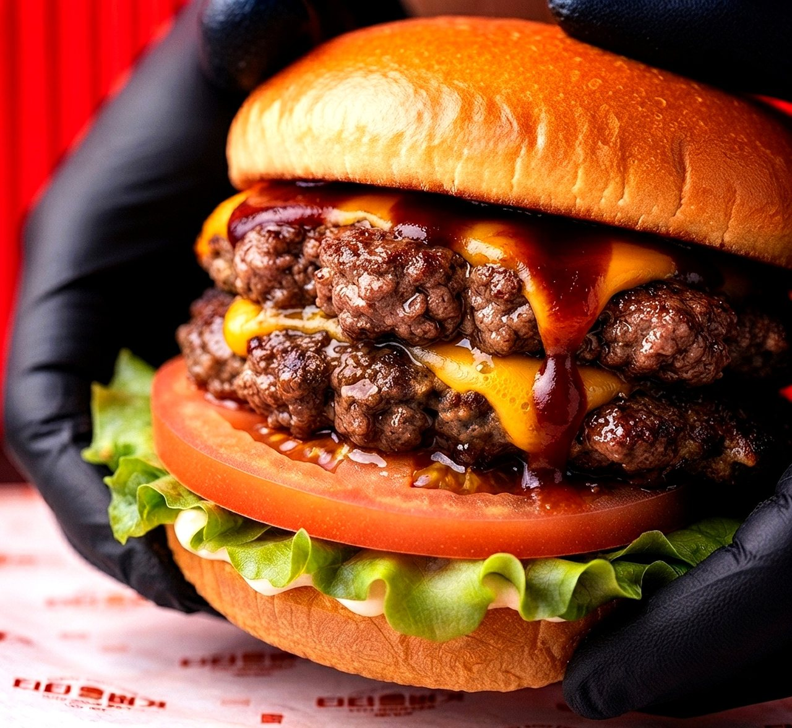
선착순 10호점창업비용 최대 2,000만원 지원
평수는 묻지 않습니다. 홀은 작아도 둡니다.
지금 쓰시는 매장 그대로 바꾸셔도 됩니다.
브랜드
토핑은 따라 할 수 있습니다. 번과 패티는 따라 하기 어렵습니다. 티티버거가 빵과 패티 두 가지를 브랜드 이름 아래 그대로 써 둔 이유입니다.
번
촉촉하고 쫀득한 결을 내려고 번부터 직접 만들었습니다. 시판 번을 그대로 쓰면 나오지 않는 식감입니다.


패티
끼워 팔기용 저가 패티가 아니라, 한 끼로 성립하는 두께와 굽기를 기준으로 맞췄습니다.
100% 소고기 패티100% BEEF
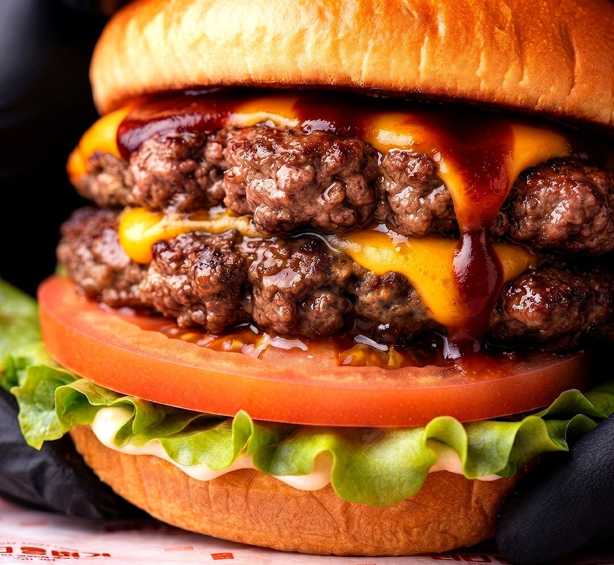
공급
티티버거 전용으로 생산해 본사가 공급합니다. 매장에서 반죽하거나 패티를 잡을 일이 없습니다. 작은 매장에서도 시작할 수 있는 이유이고, 매장이 달라도 같은 맛이 나오는 이유입니다.
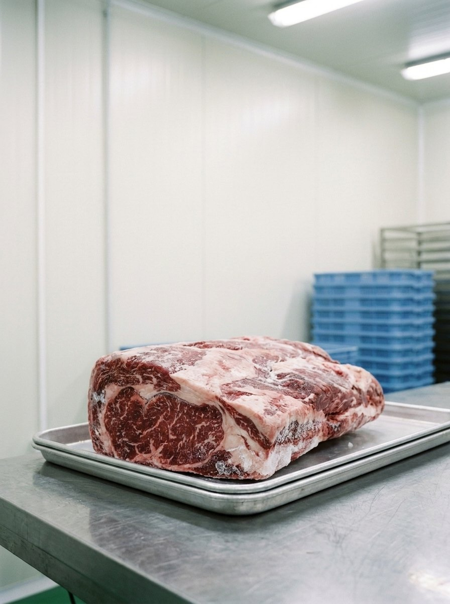
100% 소고기입니다. 한 끼로 성립하는 두께를 기준으로 맞췄습니다.
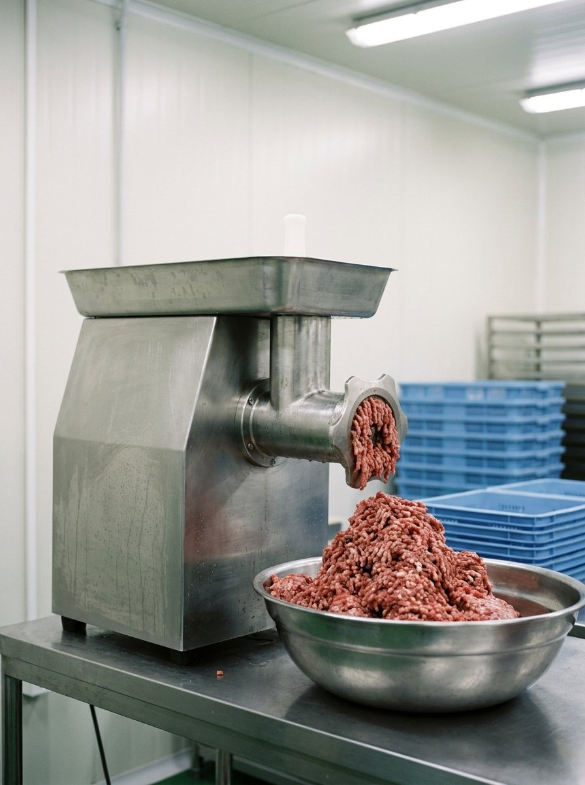
시판 패티를 가져다 쓰지 않습니다. 티티버거가 자체 개발해 전용으로 생산합니다.
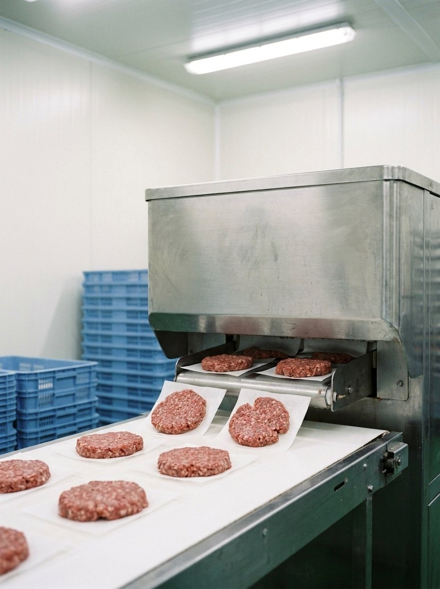
매장이 달라도, 굽는 사람이 달라도 같은 결과가 나옵니다.
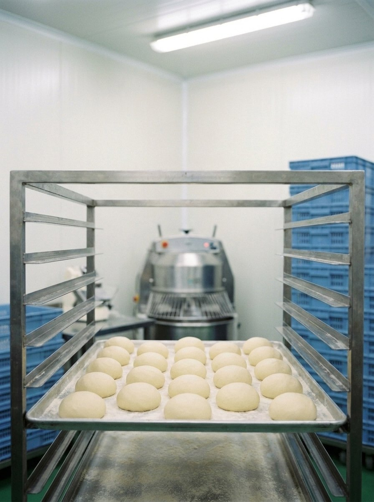
티티버거가 자체 개발한 브리오슈입니다. 시판 번으로는 이 식감이 나오지 않습니다.
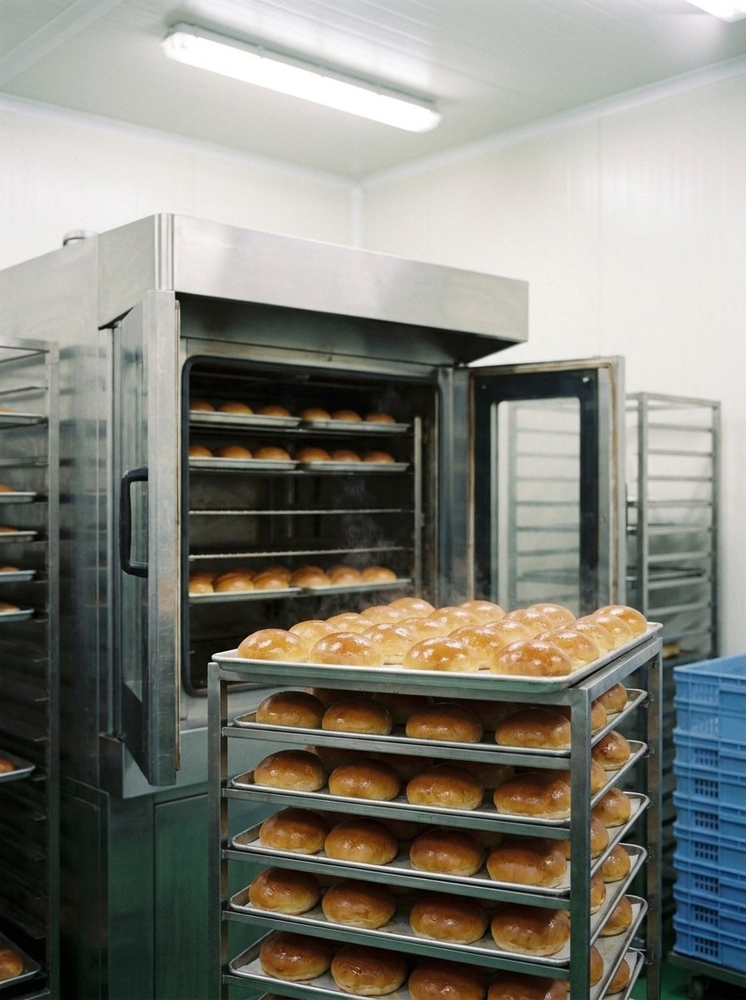
구워진 상태로 매장에 옵니다. 반죽도 발효도 매장 일이 아닙니다.
오늘 먹고 내일 또 생각나는가
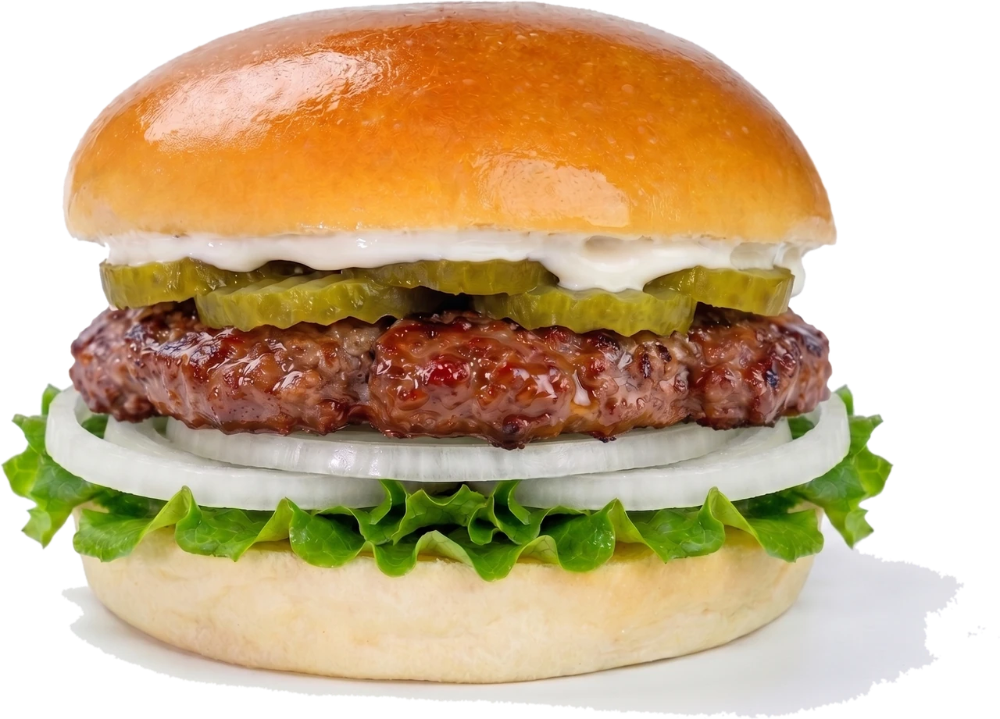
마케팅은 한 번 찾아오게 만드는 것까지입니다. 장사는 한 사람 한 사람이 여러 번 먹어야 돈이 됩니다. 한 번 찾아준 고객이 만족하지 않는다면, 어떤 마케팅을 해도 다시 찾게 만들기는 쉽지 않습니다.
그래서 티티버거의 기준은 오늘 먹고 내일 또 생각나는가입니다. 번과 패티를 직접 만든 이유가 여기에 있습니다.
창업 혜택
프랜차이즈는 누구나 쉽게 할 수 있어야 한다고 믿습니다. 그래서 선착순 10호점까지, 시작을 막는 비용 열두 가지를 받지 않거나 대신 부담합니다.
시작을 막는 비용 12無
※ 교육비 300만원은 정상 부과되며, 로열티는 25개월차부터 월 20만원이 부과됩니다. 인테리어·간판·주방집기는 본사 시공·공급 품목이 아니며(자율 시공·직접 구매), 원하시는 경우 본사 협력업체를 안내해 드립니다. 별도 공사(가구·소방·철거·전기 증설·냉난방기·덕트·외부 공사·POS 등)는 점포 상황에 따라 별도입니다.
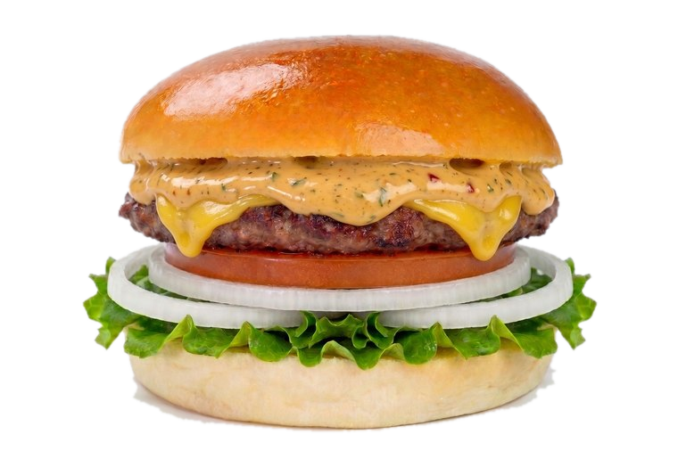
업종 변경
업종 변경을 고민하는 분들은 이미 매장과 집기를 가지고 계십니다. 자율 시공은 혜택이기 이전에, 가진 것을 버리지 않아도 된다는 뜻입니다.
바뀌는 것
간판, 메뉴판,
그리고 저녁 매출
안 바뀌는 것
평수, 바테이블,
주방 동선, 포장 창구
판매 채널 — 4WAY
버거는 점심과 저녁에 다 팔리는 메뉴입니다. 한 매장이 네 갈래로 팝니다.
좌석이 몇 개 없는데 홀 장사가 될까요?
평수는 따지지 않습니다. 홀은 작아도 반드시 둡니다.
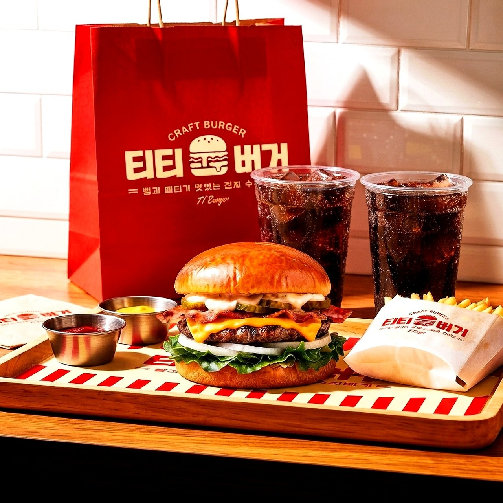
포장 손님이 많은 자리인데 괜찮을까요?
홀과 함께 갑니다. 포장은 창구 하나로 돌아갑니다.
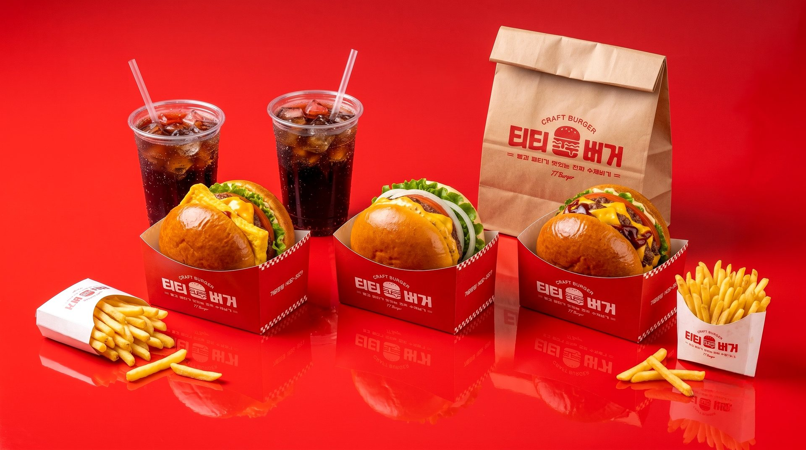
배달 앱은 새로 등록해야 하나요?
네, 매장 단위라 새로 등록합니다. 메뉴는 버거 · 치킨 · 사이드로 구성이 달라집니다.
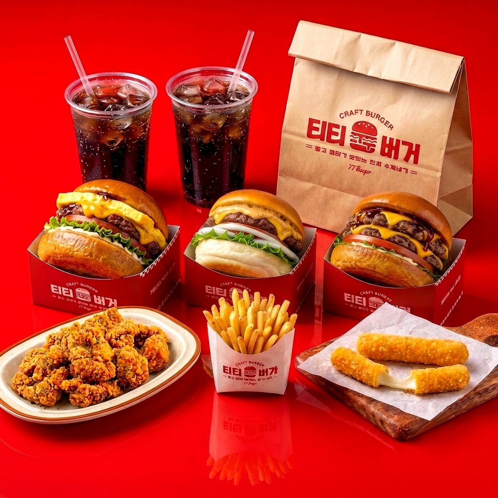
단체 주문도 받을 수 있나요?
오피스 단체주문과 행사. 1인 1개로 떨어져 배분이 간단합니다.
창업 형태
최소 평수 조건을 두지 않습니다. 대신 홀은 작아도 반드시 둡니다. 지금 쓰시는 매장을 그대로 바꾸는 경우가 많습니다.
운영사
업종을 바꾸실 때 가장 불안한 건 메뉴가 아니라 본사입니다. 티티버거를 운영하는 ㈜지에이엠은 2023년부터 수제버거 프랜차이즈를 운영해 왔습니다.
가맹점 사이 거리를 기준으로 신규 출점을 제한합니다. 본사가 옆에 또 열어서 나눠 먹는 구조를 만들지 않습니다. 구체 기준은 가맹 계약서와 정보공개서에 명시됩니다.
지도 © OpenStreetMap contributors · 반경은 예시이며 실제 기준은 정보공개서를 따릅니다
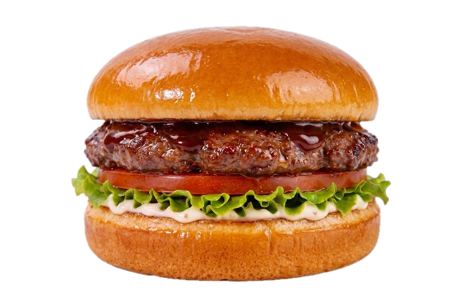
창업 절차
각 단계에서 무엇을 하는지 미리 알고 시작하시는 편이 낫습니다. 소요 기간은 점포 상황과 인허가 일정에 따라 달라집니다.
팔리는 물건인지는, 손님이 답합니다
배달앱에 실제로 올라온 리뷰입니다. 사진은 손님이 직접 찍어 올린 것이고, 글은 원문 그대로입니다.
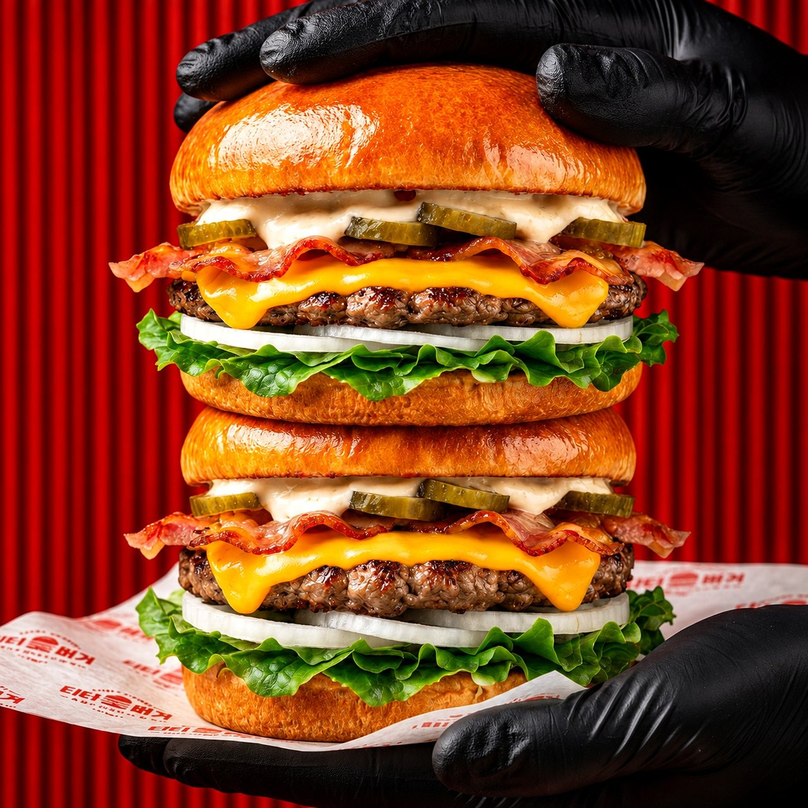
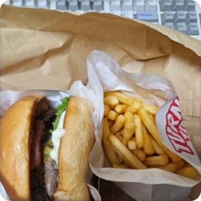
★★★★★별점 5점 · 배달의민족· 지난 달
수제버거 메이커 버거 왠만한곳 다먹어봤는데.. 탑이네요.. 육즙팡팡이유가 있네요!
햄버거 일케 따땃하게 매장에서 바로 나온것마냥 먹은거 처음입니다.자주 먹을께요
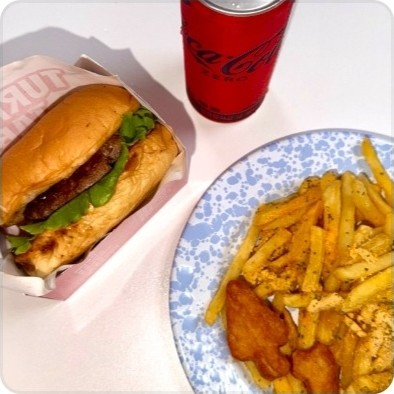
★★★★★별점 5점 · 배달의민족· 지난 주 · 픽업
퍽퍽한 고기패티를 과한 소스로 감추려는게 수제버거를 안좋아하는 이유 중 하나인데요, 여기 버거는 겉보기에는 그래보이지만 막상 먹어보니 퍽퍽하다는 느낌은 거의 못 받았어요.
…픽업하느라 잠깐이었지만 매장 방문했는데 매장도 정말 깔끔하고요. 다음에 다른 버거도 먹어보려고요.
★★★★★별점 5점 · 배달의민족· 4개월 전
와 진짜 인생 육즙패티입니다.. 입에서 육즙이 진짜 미칩니다 단품하나에 오만가지 맛이 납니다..
베이컨이랑 치즈 추가하세요 구라가 아니라 패티 진짜 미칩니다
★★★★★별점 5점 · 배달의민족· 그제 · 가게배달
야채도 신선하고 패티가 육즙이느껴지고 맛있어요
너무잘먹었습니다 어제처음먹고 오늘은 매장가서 포장까지 해온건 안비밀 입니다 번창하십쇼
★★★★★별점 5점 · 배달의민족· 3개월 전
진짜 미쳤다 라는 말밖에는 뭐 쓸게없네요 패티가 진짜 와 고기맛이 엄청 나요 특히 계란이불 너무너무 맛있고 폭신한데 이거 더 추가하고싶을정도…
★★★★★별점 5점 · 배달의민족· 그제
빵이 완전 부드러운게 신기해요 ㅋㅋ
대게튀김 강추 써있어서 주문해봤는데 진짜게살이네요 꿀맛!
★★★★★별점 5점 · 배달의민족· 2개월 전
패티랑 빵이 맛있어서 계속 주문하게 되네요 맛있어요
★★★★★별점 5점 · 배달의민족· 5개월 전
맛있어서 어제 오늘 연속으로 시킵니다.
빵 맛있는 햄버거없는데 정말 맛있고 패티 맛있어요 햄버거 싫어하는 애들도 완전 좋아해요
★★★★★별점 5점 · 배달의민족· 이번 달
사장님~~~ 샤워감자튀김 사이즈 이거 맞아요? 너무감동적인데요♡ㅜㅜ
정말맛있게 잘먹었어요~포크 챙겨주신거 감사해요 사장님~ 오래장사해주세용~ 담엔 치킨먹어볼께요~
배달의민족에 실제로 등록된 리뷰 9건입니다(2026년 8월 24일 수집). 사진은 손님이 직접 올린 것을 원본 비율 그대로 실었고, 글은 원문 그대로이며 길이 때문에 줄인 곳은 … 로 표시했습니다. 작성자는 각각 리뷰 76~778건을 쓴 이용자입니다. 작성자 보호를 위해 프로필과 닉네임은 싣지 않았습니다. 수집한 10건 중 리뷰 작성 대가가 언급된 1건은 제외했습니다. 원본 캡처는 별도 보관하고 있습니다.
자주 묻는 질문
최소 평수 조건을 두지 않습니다. 지금 쓰시는 매장 크기에 맞춰 홀 규모를 잡습니다. 다만 홀은 작더라도 반드시 둡니다 — 바테이블 몇 자리라도 됩니다.
가맹비 500만원과 보증금 100만원은 전액 면제입니다. 로열티 월 20만원은 24개월간 면제되고 25개월차부터 부과됩니다. 교육비 300만원은 부과됩니다. 여기에 재가맹비·감리비·광고분담비 면제, 간판 교체비·쇼케이스 냉장고·음료 초도물량 지원, 창업비용 무이자 할부(6개월)까지 — 시작을 막는 비용 열두 가지를 덜어냅니다.
평수 조건이 없어 지금 쓰시는 매장을 그대로 살릴 수 있습니다. 가맹비·보증금이 면제되고 로열티도 24개월간 면제되며, 인테리어와 주방집기는 본사를 거치지 않고 직접 하십니다. 창업비용은 무이자 6개월 할부로 나눌 수 있습니다.
가능합니다. 인테리어와 간판을 본사가 시공하지 않기 때문에 지금 쓰시는 시설을 살려 전환하실 수 있습니다. 어느 정도까지 살릴 수 있는지는 상권 분석과 현장 미팅에서 함께 확인합니다.
대부분 그대로 사용합니다. 철판·그리들 중심의 소형 주방이면 버거 조리에 필요한 추가 장비가 많지 않습니다. 필요한 추가 장비는 상권 분석과 현장 미팅에서 매장 조건에 맞춰 안내드립니다.
버거는 점심과 저녁에 함께 팔리는 메뉴라 저녁 시간대 판매가 가능해집니다. 홀 · 포장 · 배달 · 단체 네 갈래로 판매하며, 쓰시던 배달 앱 계정과 포장 창구는 그대로 씁니다.
아닙니다. 인테리어와 간판은 자율 시공, 주방집기는 직접 구매입니다. 본사가 시공·공급 마진을 가져가지 않습니다. 원하시면 본사 협력업체를 안내해 드립니다.
배달 전용 매장은 모집하지 않습니다. 홀은 작더라도 반드시 두고, 포장과 배달을 함께 운영합니다. 샵인샵 형태도 받지 않습니다.
선착순 10호점까지 창업비용을 최대 2,000만원 지원하고, 창업 혜택 12無가 적용됩니다 — 가맹비·보증금·재가맹비·감리비·광고분담비 면제, 로열티 24개월 면제, 간판 교체비(A급 상권 기준)·쇼케이스 냉장고·음료 초도물량·오픈 현장지원, 창업비용 무이자 할부까지. 여기에 첫 달 당근 광고 지원, 원자재 지원, 오픈 이벤트 지원이 함께 제공됩니다.
인테리어·간판·주방집기는 본사 공급 품목이 아닙니다. 직접 시공하고 직접 구매하십니다. 다만 버거의 맛을 좌우하는 번과 패티는 티티버거가 자체 개발한 것이라 본사에서 공급합니다.
아래 창업 문의 폼에 성함 · 연락처 · 창업 희망 지역 · 창업 형태를 남겨 주시면 담당자가 연락드립니다. 페이지 상단·하단의 「창업 상담 신청」 버튼을 누르면 폼으로 바로 이동합니다. 전화 1688-2629로도 상담하실 수 있습니다.
지역과 점포 상황만 알려 주십시오.
어떤 형태가 맞는지부터 정리해 드립니다.
창업 문의
지역과 점포 상황을 알려 주시면, 어떤 형태가 맞는지부터 정리해 드립니다.